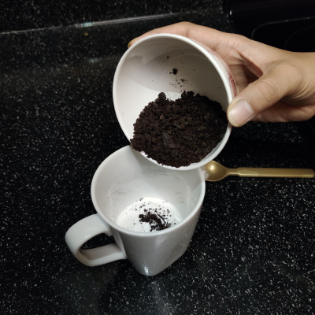
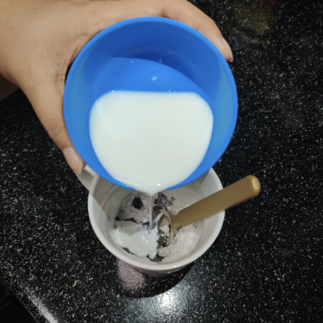
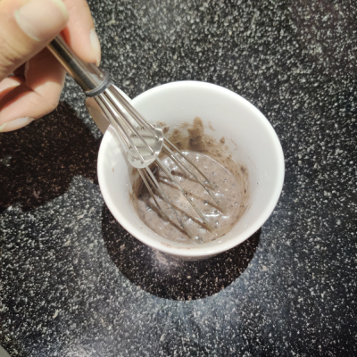
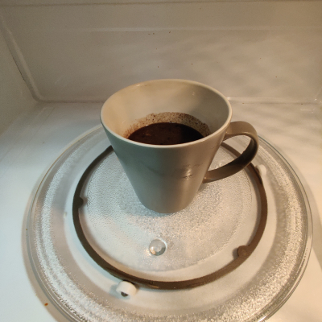
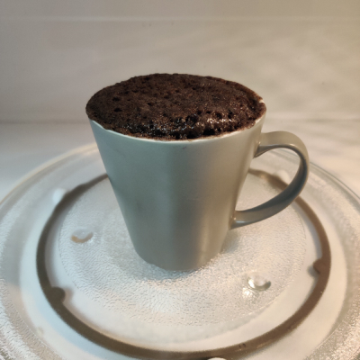
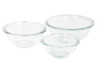
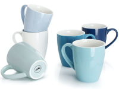

Mug Cake
| Prep time | 5 min |
| Cook time | 2 min |
| Total time | 7 min |
| Servings | 1 |

This is my own version of the oreo microwave mug cake. This chocolaty treat is truly great for nights when I need a yummy dessert that is ready in less than 7 minutes! The reason it is perfect is you can have it for breakfast and also as a night snack. The times when I have a sweet tooth but don't want to overload myself with an entire chocolate cake; not that I can't finish it but I am afraid that I would have to live with the shame. For such times, I need something small, single serving and guilt free - the solution is MUG Cake.
back to topIngredients

- All purpose Flour - 1/4 cup
- Granulated sugar - 2 Tablespoons
- Baking powder - 1 Teaspoon
- Salt - a pinch
- Milk, room temperature - 1/4 cup
- Oreo cookies - 4
- Vegetable oil - 2 Tabelspoons
Method
-

- Step 1: Combine the dry ingredients
- Place crushed oreo, flour, sugar, baking powder, and salt in a small bowl and use a whisk to stir until everything is well combined. 
- Step 2: Combine the wet ingredients
- Now add the milk and vegetable oil to this. 
- Step 3: Combine the wet and dry ingredients
- Mix and combine both the wet and dry ingredients until all the flour is moistened. 
- Step 4: Bake
- Put the mug into the microwave and set timer for 2 minutes. The cake is ready when its fluffy.
You can check if it's done by inserting a toothpick and it comes off easily.
Variations
- Blueberry Cake :
- Add 1 teaspoon vanilla extract. Stir in fresh blueberries. Raspberries and diced strawberries also work well.
- Chocolate Chip Cake :
- Add 1 teaspoon vanilla extract. Stir in chocolate chips. Coarsely chopped baking chocolate will work great too.
- Peanut Butter Cake :
- Stir in 1 tablespoon of crunchy peanut butter in the mix
Nutrition
- Calories 606
- Fat : 42g
- Saturated Fat : 16g
- Carbohydrates : 55g
- Fiber : 7g
- Sugar : 21g
- Protein : 10g
Recommended Products

Whisk- 
Mixing Bowls - 
Mugs